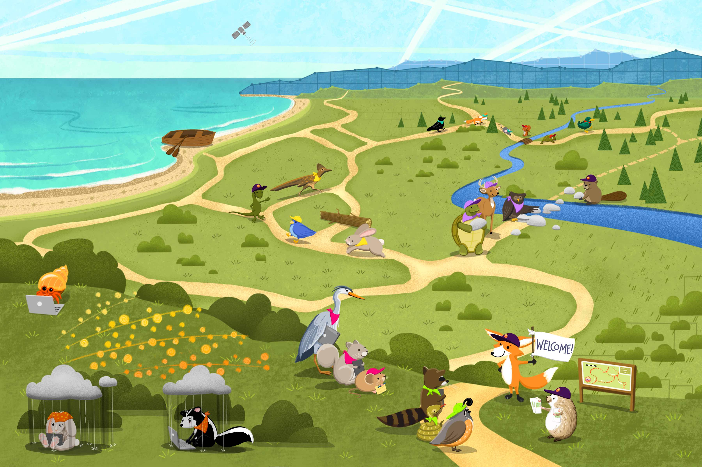
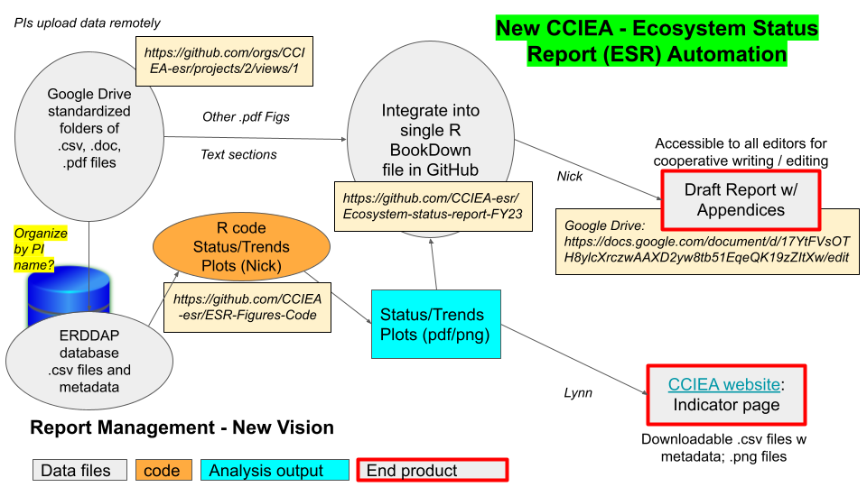
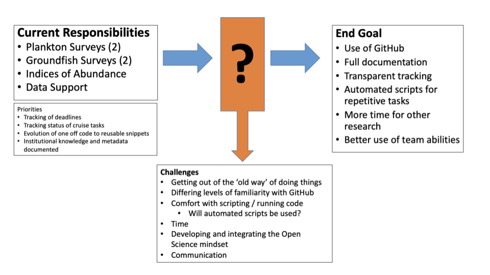
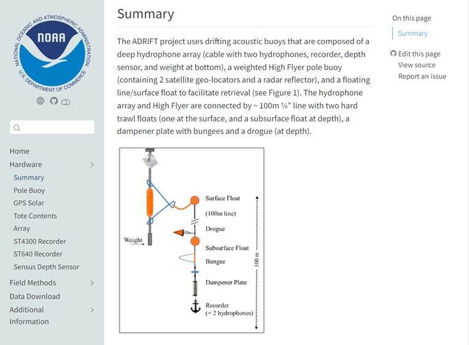

Pathways
This page has guidance and examples around the Pathways document; to learn more about what teams accomplish, explore stories from previous cohorts.
The concept
Perhaps the most important part of Openscapes is helping teams identify their trailhead together, as illustrated in the Champions landscape illustration.

We support individuals to “find their teams” by discussing approaches and software, so that they find they have common parts of how they work, whether they are working on the same or different projects. This builds from the ideas of creating space and place in order to find the common, as introduced in the better science chapter.
The Pathways Spreadsheet provides a structured way for your team to think how you work and find common approaches and needs (template).

This format has helped many groups think through their trailhead and identifying where they are now. Some groups have found it more useful to draw things out as a workflow on a whiteboard or google slide. The spreadsheet format might not work for your group, and that is okay; use whatever format makes sense for you.
Planning guidance
You’ll develop your Pathway by talking with others on your team, screensharing (“show me”), and asking questions.
You’ll use the document by creating a copy of the template and then discussing with your team. Start with the “Now” column. How do you work now? Add rows as best reflects your work, but take a moment before deleting them in case it’s something you haven’t thought about in this way before rather than if it’s not relevant to you. Then, move on to the “Next Steps” column as you think through priorities and learn from/with/for your cohort. This will be a work in progress throughout the cohort that you’ll present a snapshot of in the final Cohort Call (see next) and that you can revisit following the cohort as well.
Presenting guidance
On the final Cohort Call, each team presents their Pathways. Each team has 3 minutes to share followed by 2 minutes for questions. We encourage leads not to present, and it’s great when we hear multiple voices from the teams.
This is informal sharing of unpolished work-in-progress. Everyone makes progress throughout the Cohort: in mindsets, planning and actions. This is an opportunity to reflect and talk about it, building on the reflection breakout rooms that began most Cohort Calls. We’ve been reflective each week and we’ve all made progress.
Presentations do not need be line-by-line of the Pathways Spreadsheet and there’s no wrong way to talk about your progress. Whatever your group wants to create and share is great - could be a photo of a whiteboard, a slide, the Pathways spreadsheet, or a “screenshare and tell” live walk-through of your files/code/ideas.
A few reflection prompts that can help frame the presentations:
- What are the practices we’ve covered during the Cohort that most compel you?
- What are the practices we’ve covered during the Cohort that most confuse you?
- Are there practices that are new to you that you didn’t originally think would work with your own research interests? If so, which?
- What are your two biggest take-aways from the Cohort?
- What future revisions will you propose making for your pathway?
- Any final questions you want to workshop with the Cohort?
Pathways stories
Here are a few one-slide pictures of Pathways presented by Champions teams in their final sessions:




Read more
Champions Program blog posts; you’ll find more Pathways shared as slides and stories following the 2-month cohort
A TL;DR Collection of Stories from Openscapes Champions and Mentors; these stories are largely from 3 months+ following Pathways presentations
Case Studies from the inaugural Champions Cohort (2019)